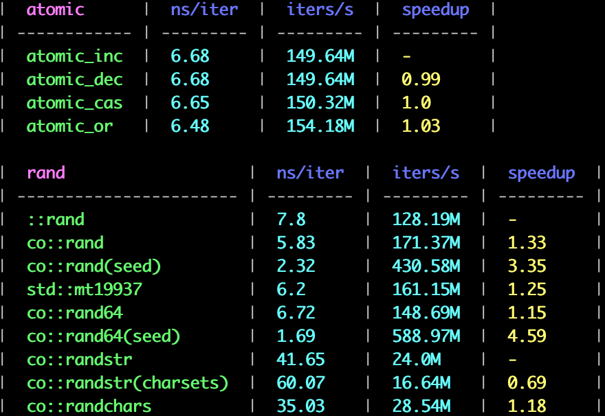

#头文件
#include "co/benchmark.h"
#API
公开函数只有一个，在 co 命名空间：
void co::run_benchmarks();
- 运行基准测试，测试结果以 markdown table 格式输出。
main一般是固定写法：
#include "co/benchmark.h"
int main(int argc, char** argv) {
flag::parse(argc, argv);
co::run_benchmarks();
return 0;
}
#定义基准测试组
BM_group(name) {
// BM_add(...) { ... }
}
BM_group宏定义一个基准测试组，实际是一个函数，用户可以在其中自由添加公共初始化代码、预热代码等；name必须是合法变量名；- 有多个
BM_group时，name不能重复。
#定义基准测试用例
BM_add(name) {
// 测试代码
}
BM_add宏定义一个基准测试用例，实际是BM_group所定义函数中的代码块；name不要求是合法变量名；
#子组
BM_sub_group_begin;
- 在
BM_group内开启一个子组，子组之间独立比较。 - 首个
BM_sub_group_begin之前的BM_add归入默认子组。 - 每个子组以第一个测试为基准，其余测试相对该基准计算
speedup。 - 基准自身
speedup显示为-。
#BM_use
BM_use(v);
- 防止编译器优化掉测试代码。
- 若测试代码被优化掉，
iters/s会异常大，此时可使用BM_use。 - 可用于任意变量，通常放在
BM_add外部，以免干扰被测代码。
#运行逻辑
- 每个
BM_group内部定义一个 bool flag，默认值false。 - 若所有 group 的 flag 都是默认值，则运行所有 group。
- 若有 flag 为
true，则只运行 flag 为true的 group。 - group 按注册顺序执行。
命令行示例：
./xx # 运行所有 group
./xx -rand # 只运行 rand 这个 group
./xx -rand -log # 只运行 rand 和 log 两个 group
#示例
#include "co/benchmark.h"
#include "co/atomic.h"
#include "co/rand.h"
#include <random>
BM_group(atomic) {
__cacheline_aligned int i = 0;
BM_add(atomic_inc) {
co::atomic_inc(&i);
}
BM_use(i);
BM_add(atomic_dec) {
co::atomic_dec(&i);
}
BM_use(i);
BM_add(atomic_cas) {
co::atomic_cas(&i, 0, 1);
}
BM_use(i);
BM_add(atomic_or) {
co::atomic_or(&i, 11);
}
BM_use(i);
}
BM_group(rand) {
// 预热
uint32 x = ::rand();
x += co::rand();
BM_sub_group_begin;
BM_add(::rand) {
x = ::rand();
}
BM_use(x);
BM_add(co::rand) {
x = co::rand();
}
BM_use(x);
uint32 seed = co::rand();
BM_add(co::rand(seed)) {
x = co::rand(seed);
}
BM_use(x);
std::mt19937 m(std::random_device{}());
BM_add(std::mt19937) {
x = m();
}
BM_use(x);
uint64 u;
BM_add(co::rand64) {
u = co::rand64();
}
BM_use(u);
uint64 seed64 = co::rand64();
BM_add(co::rand64(seed)) {
u = co::rand64(seed64);
}
BM_use(u);
BM_sub_group_begin;
BM_add(co::randstr) {
(void)co::randstr();
}
BM_add(co::randstr(charsets)) {
(void) co::randstr("0-9a-f", 15);
}
char buf[16];
BM_add(co::randchars) {
co::randchars(buf, sizeof(buf));
}
BM_use(buf);
}
int main(int argc, char** argv) {
flag::parse(argc, argv);
co::run_benchmarks();
return 0;
}
运行:
./bm # 运行 atomic 与 rand
./bm -atomic # 仅运行 atomic
./bm -rand # 仅运行 rand
测试结果:

- 输出结果是 Markdown table 格式。
ns/iter：每次迭代纳秒数。iters/s：每秒迭代次数。speedup：相对于测试基准的加速倍数。
#构建及运行 coost 内部基准测试
benchmark 目录下是 coost 内部基准测试代码，在 coost 根目录执行下述命令构建及运行：
# 构建
xmake b benchmark
# 默认运行所有基准测试代码
xmake r benchmark
# 仅运行指定的基准测试
xmake r benchmark -rand -mem